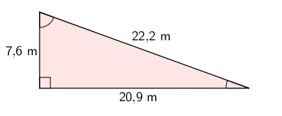
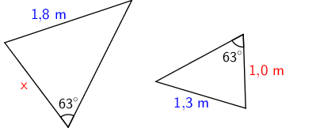
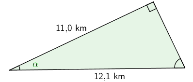
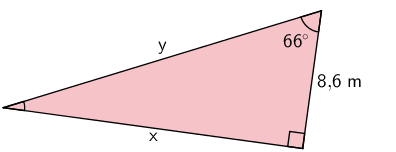
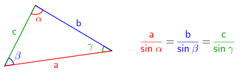
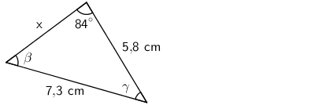
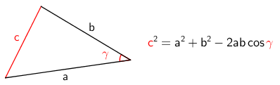
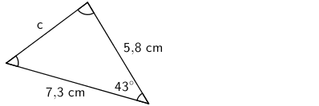
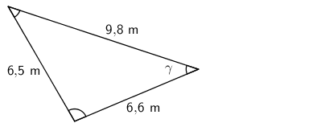

MA9 Jakso 2: Trigonometriset funktiot
1. Kertausta
Suorakulmainen kolmio
Kolmiot voitiin jakaa sen kulmien perusteella kolmeen ryhmään: teräväkulmaisiin, suorakulmaisiin ja tylppäkulmaisiin kolmioihin. Kolmion kulmien summa on aina \(\mathsf{180^\circ}\), joten suoria tai tylppiä kulmia ei voi kolmiossa olla kuin yksi. Lisäksi jos kaksi kolmion kulmaa ovat samat, kolmiota kutsuttiin tasakylkiseksi kolmioksi ja kaikkien kulmien ollessa yhtä suuria (\(\mathsf{60^\circ}\)) kolmio on nimeltään tasakylkinen kolmio.


Suorakulmaisen kolmion kahta lyhyempää sivua kutsutaan kateeteiksi ja pisintä, suoraa kulmaa vastassa olevaa sivua, hypotenuusaksi.

Pyöristäminen
Mitattuihin tai valmiiksi ilmoitettuihin lukuihin liittyy aina oletusarvoisesti epätarkkuutta. Esimerkiksi kolmion sivujen pituudet on annettu käyttäen jotakin tarkkuutta eikä luvusta voi päätellä, onko se täysin tarkka vai likiarvo jostakin tarkemmasta luvusta. Esimerkiksi tavallisella viivottimella ei voi mitata millimetriä tarkempia pituuksia.
Tästä syystä laskettaessa mitatuilla luvuilla (luvussa on yksikkö) vastausta tulee pyöristää siten, että se ei ole lähtöarvoja tarkempi. Jos tehtävänannossa ei ole ilmoitettu haluttua tarkkuutta, pyöristetään vastaus oletuksena epätarkimman lähtöarvon merkitsevien numeroiden mukaisesti.
Kokonaisluvussa merkitseviä numeroita ovat kaikki muut paitsi lopussa olevat nollat.
\(\mathsf{\color{red}{102\;455}}\) (kuusi merkitsevää numeroa)
\(\mathsf{\color{red}{102\;5}00}\) (neljä merkitsevää numeroa)
\(\mathsf{\color{red}{1}00\;000}\) (yksi merkitsevä numero)
Desimaaliluvussa merkitseviä numeroita ovat kaikki muut paitsi alussa olevat nollat.
\(\mathsf{\color{red}{3,\!1415}}\) (viisi merkitsevää numeroa)
\(\mathsf{\color{red}{3,\!1400}}\) (viisi merkitsevää numeroa)
\(\mathsf{0,\!0\color{red}{120}}\) (kolme merkitsevää numeroa)
\(\mathsf{0,\!000\color{red}{6}}\) (yksi merkitsevä
numero)
Lähtöarvoista etsitään se luku, jossa on vähiten merkitseviä numeroita, ja vastaus pyöristetään sen mukaisesti.
Esimerkki: Laske suorakulmaisen kolmion pinta-ala.

\(\begin{align}\mathsf{A} &= \mathsf{\dfrac{\text{20,9 m} \cdot \text{7,6 m}}{2}}\\ &= \mathsf{\text{79,42 m}^2}\\ &\approx \mathsf{79\;m^2}\end{align}\)
Vastaus: Kolmion pinta-ala on 79 neliömetriä.
Vastaus pyöristettiin kahden merkitsevän numeron tarkkuuteen, koska lähtöarvoista 7,9 m oli ilmoitettu vain 2 merkitsevän numeron tarkkuudella. Toinen kateetti 20,9 m oli ilmoitettu kolmen merkitsevän numeron tarkkuudella ja oli näin ollen tarkempi.
Pythagoraan lause
Pythagoraan lauseen avulla voidaan ratkaista suorakulmaisen kolmion tuntemattoman sivun pituus, jos kaksi muuta sivua tunnetaan. Pythagoraan lause on yhtälö, joka ilmaiseen kateettien ja hypotenuusan välisen riippuvuuden. Jos suorakulmaisen kolmion kateetit ovat \(\mathsf{a}\) ja \(\mathsf{b}\) ja hypotenuusa on \(\mathsf{c}\), Pythagoraan lause on
\(\mathsf{a^2 + b^2 = c^2}\)
Esimerkki: Laske sivun \(\mathsf{x}\) pituus.
a)

\(\begin{align}\mathsf{a^2 + b^2} &= \mathsf{c^2}\\\mathsf{4,\!9^2 + 7,\!6^2} &= \mathsf{x^2}\\\mathsf{x^2} &= \mathsf{24,\!01 + 57,\!76}\\\mathsf{x^2} &=\mathsf{81,\!77} &&\mathsf{\| \sqrt{\quad}}\\\mathsf{x} &=\pm\mathsf{9,\!042...}\\\mathsf{x} &\approx \mathsf{9,\!0}\end{align}\)
Vastaus: Sivun x pituus on 9,0 cm.
b)

\(\begin{align}\mathsf{a^2 + b^2} &= \mathsf{c^2}\\ \mathsf{x^2 + 7,\!9^2} &= \mathsf{8,\!8^2} && \mathsf{\| -7,\!9^2}\\ \mathsf{x^2} &= \mathsf{8,\!8^2 - 7,\!9^2}\\ \mathsf{x^2} &= \mathsf{77,\!44 - 62,\!41}\\ \mathsf{x^2} &= \mathsf{15,\!03} && \mathsf{\| \sqrt{\quad}}\\ \mathsf{x} &= \pm\mathsf{3,\!876...}\\ \mathsf{x} &\approx \mathsf{3,\!9} \end{align}\)
Vastaus: Sivun x pituus on 3,9 m.
2. Verranto ja yhdenmuotoisuus
Verranto
Verrannolla tarkoitetaan yhtälöä, jossa kaksi suhdetta on merkitty yhtä suuriksi. Verrannon ratkaisemiseksi käytetään ristiin kertomista, jonka avulla päästään nopeasti kohti yhtälön lopullista ratkaisua.
Esimerkki: Ratkaise verranto.
\(\begin{align}\mathsf{\dfrac{x}{10}} &= \mathsf{\dfrac{3}{4}} &\|\nwarrow\!\!\!\!\!\!\nearrow\\ \mathsf{4x} &= \mathsf{30} &\|:\mathsf{4}\\ \mathsf{x} &= \mathsf{7,\!5}\end{align}\)
Yhdenmuotoisuus
Kaksi kuviota ovat yhdenmuotoisia, jos niiden vastinsivujen pituuksien suhde on vakio. Toisin sanoen alkuperäistä kuviota voidaan venyttää, kiertää, siirtää tai peilata ja peilattu kuvio on yhdenmuotoinen alkuperäisen kanssa. Jos vastinsivut ovat yhtä pitkät, kuvioita kutsutaan yhteneviksi. Tämän tiedon ja verrannon avulla voidaan ratkaista yhdenmuotoisista kuvioista tuntemattoman sivun pituus, jos tunnetaan sen vastinsivu sekä toinen vastinsivupari.
Esimerkki: Ratkaise tuntemattoman sivun \(\mathsf{x}\) pituus.

\(\begin{align} \mathsf{\dfrac{\color{red}{x}}{\color{red}{1,\!0}}} &= \mathsf{\dfrac{\color{blue}{1,\!8}}{\color{blue}{1,\!3}}} && \|\nwarrow\!\!\!\!\!\!\nearrow\\ \mathsf{1,\!3x} &= \mathsf{1,\!8} && \|:\mathsf{1,\!3}\\ \mathsf{x} &= \mathsf{1,\!384...}\\ \mathsf{x} &\approx \mathsf{1,\!4}\end{align}\)
Vastaus: Sivun pituus on 1,4 metriä.
3. Trigonometriset funktiot
Suorakulmaisen kolmion kahden sivun suhteen ja yhden kulman väliselle riippuvuudelle on muodostettu joukko funktioita, joita kutsutaan trigonometrisiksi funktioiksi. Trigonometristen funktioiden avulla voidaa mm. ratkaista suorakulmaisesta kolmiosta tuntemattoman kulman tai sivun pituuden suuruus. Peruskoulussa tutustutaan kolmeen trigonometriseen funktioon: siniin (sin), kosiniin (cos) ja tangenttiin (tan).
Merkintä ja määritelmä
Trigonometriset funktiot määritellään seuraavasti:
\(\mathsf{sin\;\alpha = \dfrac{\text{vastainen kateetti}}{\text{hypotenuusa}}}\)
\(\mathsf{cos\;\alpha = \dfrac{\text{viereinen kateetti}}{\text{hypotenuusa}}}\)
\(\mathsf{tan\;\alpha = \dfrac{\text{vastainen kateetti}}{\text{viereinen kateetti}}}\)
Trigonometrisissa funktioissa ei yleensä käytetä sulkeita kulman \(\alpha\) ympärillä \(\mathsf{sin(\alpha)}\). Seuraavissa luvuissa tutustutaan tarkemmin trigonometristen funktioiden käyttöön tuntemattoman kulman tai sivun ratkaisemisessa.
Trigonometrisen funktion arvon laskeminen laskimella
Laskimen avulla voidaan voidaan laskea trigonometristen funktoiden arvoja. Kaikista funktiolaskimista löytyy sin-, cos- ja tan-funktiot. Ennen laskemista tulee kuitenkin varmistua laskimen käyttämästä kulman yksiköstä. Peruskoulussa käytetään kulman yksikkönä asteita (degrees), jolloin laskimessa pitää lukea D tai DEG laskimen ylärivissä. 2. asteen opinnoissa käytetään asteen lisäksi radiaaneja (R tai RAD) kulman yksikkönä.
Esimerkki: Laske funktioiden sin, cos ja tan arvot, kun \(\mathsf{\alpha = 55^\circ}\).
a) \(\mathsf{sin\;55^\circ = 0,\!8191... \approx 0,\!819}\)
Laskimeen näppäillään: sin + 55 + =
b) \(\mathsf{cos\;55^\circ = 0,\!5735... \approx 0,\!574}\)
Laskimeen näppäillään: cos + 55 + =
c) \(\mathsf{tan\;55^\circ = 1,\!4281... \approx 1,\!428}\)
Laskimeen näppäillään: tan + 55 + =
Kulman arvon laskeminen laskimella
Jos trigonometrisen funktion arvo tunnetaan (laskettu sivujen suhde), mutta kulma on tuntematon, saadaan kulman arvo laskettua käänteisfunktioiden avulla. Trigonometristen funktioiden käänteisfunktioita kutsutaan myös arkusfunktioiksi, ja joissain laskimissa ja tietokoneohjelmissa ne onkin nimetty arcsin, arccos ja arctan. Uudemmissa laskimissa käytetään matemaattista käänteisfunktion merkintää \(\mathsf{sin^{-1}}\), \(\mathsf{cos^{-1}}\) ja \(\mathsf{tan^{-1}}\).
Esimerkki: Laske trigonometrisen funktion arvo. Pyöristä vastaus kokonaisiksi asteiksi.
a) \(\mathsf{sin\;\alpha = 0,\!235 \qquad \alpha = 13,\!59...^\circ \approx 14^\circ}\)
Laskimeen näppäillään: SHIFT + sin + 0,235 + =
b) \(\mathsf{cos\;\alpha = -0,\!777 \qquad \alpha = 140,\!98...^\circ \approx 141^\circ}\)
Laskimeen näppäillään: SHIFT + cos + -0,777 + =
b) \(\mathsf{tan\;\alpha = 1\,809 \qquad \alpha = 61,\!06...^\circ \approx 61^\circ}\)
Laskimeen näppäillään: SHIFT + tan + 1,809 + =
4. Tuntemattoman kulman ratkaiseminen
Jos suorakulmaisesta kolmiosta tunnetaan kaksi sivua, voidaan sen kulmat ratkaista trigonometristen funktioiden avulla. Tunnetuista sivuista riippuen, muodostetaan yhtälö, jonka ratkaisemisessa käytetään trigonometristen funktioiden käänteisfunktioita \(\mathsf{sin^{-1}}\), \(\mathsf{cos^{-1}}\) tai \(\mathsf{tan^{-1}}\). Esimerkiksi, jos \(\mathsf{sin}\)-funktio muuntaa kulman vastaisen kateetin ja hypotenuusan suhteeksi, niin käänteisfunktio \(\mathsf{sin^{-1}}\) muuntaa kateetin ja hypotenuusan suhteen sitä vastaavaksi kulmaksi.
Esimerkki: Ratkaise kulman \(\alpha\) suuruus.

\(\begin{align}\mathsf{cos\;\alpha} &= \mathsf{\dfrac{\text{11,0 km}}{\text{12,1 km}}}\\ \alpha &= \mathsf{cos^{-1}\left(\dfrac{\text{11,0}}{\text{12,1}}\right)}\\ &= \textsf{24,6...}^\circ\\ &\approx \mathsf{25^\circ}\end{align}\)
Vastaus: Kulman \(\alpha\) suuruus on 25 astetta.
Trigonometriseksi funktioksi valittiin \(\mathsf{cos}\), koska kolmiosta tunnettiin \(\alpha\):n viereinen kateetti sekä hypotenuusa. Sivujen suhteen voi laskea laskimella ensin ja ottaa sitten käänteisefunktion arvo käyttämällä laskimen Ans-painiketta. Toinen vaihtoehto on muodostaa käänteisfunktion lauseke sijoittamalla suhde sulkeiden sisään. Tällöin selvitään yhdellä laskimen näpyttelyllä eikä välituloksia tarvita.
5. Tuntemattoman sivun ratkaiseminen
Jos suorakulmaisesta kolmiosta tunnetaan suoran kulman lisäksi toinen kulma ja yksi sivu, voidaan muut sivut ratkaista trigonometristen funktioiden avulla. Nyt trigonometrisen funktion arvo kertoo siis kahden sivun suhteen, jonka avulla saadaan yhtälö, joka voidaan ratkaista tutuin yhtälönratkaisun toimenpitein.
Yhtälönratkaisun näkökulmasta eteen voi tulla kaksi hieman erilaista tilannetta. Toisessa tuntematon sivu jää suhdemerkinnässä osoittajaan ja toisessa nimittäjään. Katsotaan esimerkki kummastakin tapauksesta.
Esimerkki: Ratkaise tuntemattomien sivujen \(\mathsf{x}\) ja \(\mathsf{y}\) pituudet.

| a) | b) | |
| \(\begin{align}\mathsf{tan\;66^\circ} &= \mathsf{\dfrac{x}{8,\!6}} && \| \cdot \mathsf{8,\!6}\\ \mathsf{8,\!6 \cdot tan\;66^\circ} &= \mathsf{x}\\ \mathsf{x} &= \mathsf{19,\!3...}\\ \mathsf{x} &\approx \mathsf{19}\end{align}\) | \(\begin{align}\mathsf{cos\;66^\circ} &= \mathsf{\dfrac{8,\!6}{y}} && \| \cdot \mathsf{y}\\ \mathsf{y \cdot cos\;66^\circ} &= \mathsf{8,\!6} && \|: \mathsf{cos\;66^\circ}\\ \mathsf{y} &= \mathsf{\dfrac{8,\!6}{cos\;66^\circ}}\\ \mathsf{y} &= \mathsf{21,14...}\\ &\approx \mathsf{21}\end{align}\) | |
| Vastaus: Sivun \(\mathsf{x}\) pituus on 19 metriä. | Vastaus: Sivun \(\mathsf{y}\) pituus on 21 metriä. |
6. Lisätietoa: Sinilause
Trigonometrisia funktioita voidaan soveltaa myös muihinkin kuin suorakulmaisiin kolmioihin. Sinilauseen mukaan kolmion sivun pituuden ja sivun vastaisen kulman sinin suhde on sama kaikille kolmelle sivulle.
Määritelmä
Mallikuvan ja matemaattisin merkinnöin sinilause voidaan kirjoittaa seuraavasti.

Kolmiosta täytyy siis tuntea yksi pari vastakkaisia osia (sivu + kulma) ja lisäksi yksi muu suure, jonka jälkeen kaikki muut kolmion suureet voidaan laskea sinilauseen avulla.
Esimerkki: Laske
a) kulman \(\beta\) suuruus
b) sivun x pituus.

a) Muodostetaan sinilauseen mukainen verranto tunnetuista tiedoista, ja ratkaistaan verranto.
\(\begin{align} \mathsf{\dfrac{\text{7,3}}{sin\;84^\circ}} &= \mathsf{\dfrac{\text{5,8}}{sin\;\beta}} &&\| \nwarrow\!\!\!\!\!\!\nearrow\\ \mathsf{\text{7,3} \cdot sin\;\beta} &= \mathsf{\text{5,8} \cdot sin\;84^\circ} &&\| :\textsf{7,3}\rule{0pt}{1.2em}\\ \mathsf{sin\;\beta} &= \mathsf{\dfrac{\text{5,8} \cdot sin\;84^\circ}{\text{7,3}}} &&\| \mathsf{sin^{-1}}\rule{0pt}{2em}\\ \beta &= \mathsf{\text{52,2...}^\circ}\rule{0pt}{1.2em}\\ \beta &\approx \mathsf{52^\circ}\rule{0pt}{1.2em} \end{align}\)
Vastaus: Kulman \(\beta\) suuruus on 52 astetta.
b) Lasketaan sivun x vastaisen kulman suuruus kolmion kulmien summan avulla.
\(\mathsf{\gamma = 180^\circ - 84^\circ - \beta = 180^\circ - 84^\circ - 52,\!2...^\circ = 43,\!7...^\circ}\)
Muodostetaan sinilauseen mukainen verranto ja ratkaistaan tuntemattoman sivun x pituus.
\(\begin{align} \mathsf{\dfrac{\text{7,3}}{sin\;84^\circ}} &= \mathsf{\dfrac{x}{sin\;43,\!7...^\circ}} &&\| \nwarrow\!\!\!\!\!\!\nearrow\\ \mathsf{x \cdot sin\;84^\circ} &= \mathsf{\text{7,3} \cdot sin\;43,\!7...^\circ} &&\| : \mathsf{sin\;84^\circ}\rule{0pt}{1.2em}\\ \mathsf{x} &= \mathsf{\text{5,08...}}\rule{0pt}{1.2em}\\ x &\approx \mathsf{\text{5,1}}\rule{0pt}{1.2em} \end{align}\)
Vastaus: Sivun x pituus on 5,1 cm.
Kolmiomittaus
Kolmiomittaus on yksi tärkeimmistä maanmittauksen perustyökaluista. Kolmiomittauksessa käytetään apuna sinilausetta.
Aluksi maastosta mitataan tarkasti perusviiva. Tämän jälkeen mitataan molemmista perusviivan päistä suunta kohteeseen. Kolmion kulmien summan avulla saadaan perusviivan vastaisen kulman suuruus laskettua. Lopuksi sinilauseen avulla voidaan laskea etäisyydet perusviivan päistä kohteeseen. Tämän jälkeen voidaan laskea uusia kolmioita vain kulmia mittaamalla eikä hankalaa maastossa tapahtuvaa perusviivan mittaamista tarvita kuin harvoin.
7. Lisätietoa: Kosinilause
Kosinilauseen avulla voidaan ratkaista sinilauseen tavoin kaikenlaisten kolmioiden tuntemattomien sivujen ja kulmien suuruuksia. Kosinilauseella voi esimerkiksi ratkaista kolmion kolmannen sivun pituuden, kun kaksi muuta sivua ja niiden välinen kulma tunnetaan. Toisaalta sen avulla voidaan ratkaista jokin kolmion kulma, vaikka tunnettaisiin vain kolmion sivut.
Määritelmä
Kosinilause voidaan johtaa Pythagoraan lauseesta sekä trigonometristen funktioiden määritelmästä, ja se näyttää seuraavalta.

Vaikka kosinilause voidaankin kirjoittaa kaikille kulmille, voidaan selkeyden vuoksi käyttää vain yhtä yhtälöä ja sovittaa se ratkaistavaan ongelmaan. Tärkeintä on ymmärtää, että sivu c on kulman \(\gamma\) vastainen sivu.
Esimerkkejä
Esimerkki: Ratkaise sivun c pituus.

\(\begin{align} \mathsf{c^2} &= \mathsf{7,\!3^2 + 5,\!8^2 - 2 \cdot 7,\!3 \cdot 5,\!8 \cdot cos\;43^\circ}\\ \mathsf{c^2} &= \mathsf{24,\!99...} &&\|\sqrt{\rule{1em}{0pt}}\\ \mathsf{c} &= \textsf{4,99...}\\ \mathsf{c} &\approx \textsf{5,0} \end{align}\)
Vastaus: Sivun x pituus on 5,0 cm.
Esimerkki: Ratkaise kulman \(\gamma\) suuruus.

Ratkaistaan kosinilause kulman kosinin suhteen.
\(\begin{align} \mathsf{c^2} &= \mathsf{a^2 + b^2 - 2ab\;cos\;\gamma}\\\\ &\quad\vdots\qquad\small(\texttt{Harjoitustehtävänä})\\\\ \mathsf{cos\;\gamma} &= \mathsf{\dfrac{a^2 + b^2 - c^2}{2ab}}\end{align}\)
Ratkaistaan kulma edellä johdetun kaavan avulla.
\(\begin{align}\mathsf{cos\;\gamma} &= \mathsf{\dfrac{6,\!6^2 + 9,\!8^2 - 6,\!5^2}{2 \cdot 6,\!6 \cdot 9,\!8}} && \| \mathsf{{cos}^{-1}}\\ \gamma &= \textsf{41,188...}^\circ\\ \gamma &\approx \mathsf{41^\circ}\end{align}\)
Vastaus: Kulman \(\gamma\) suuruus on 41 astetta.